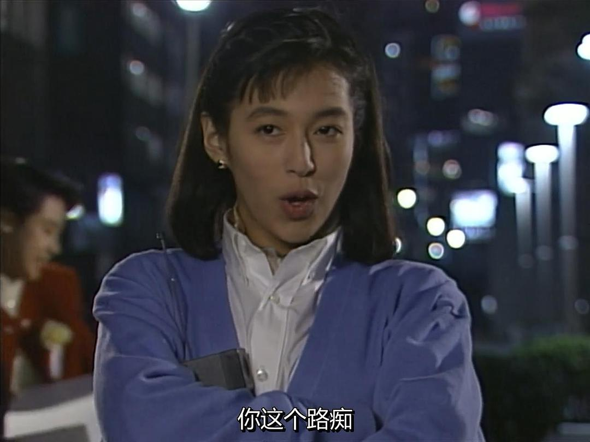
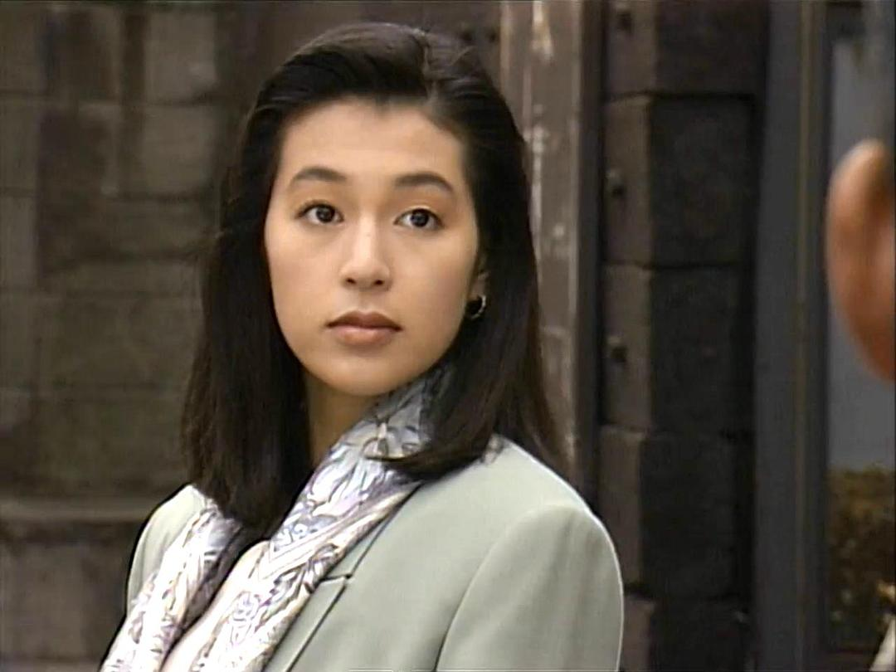
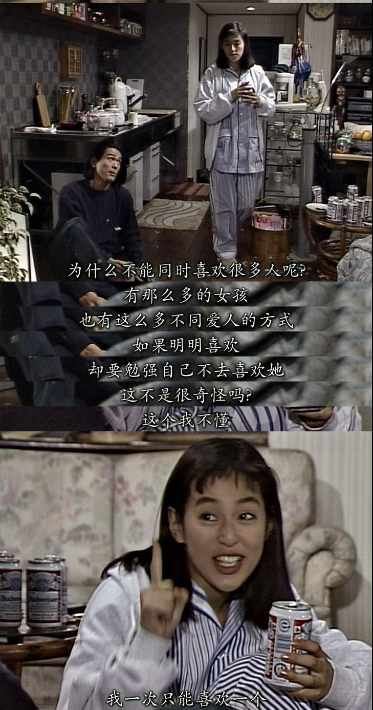
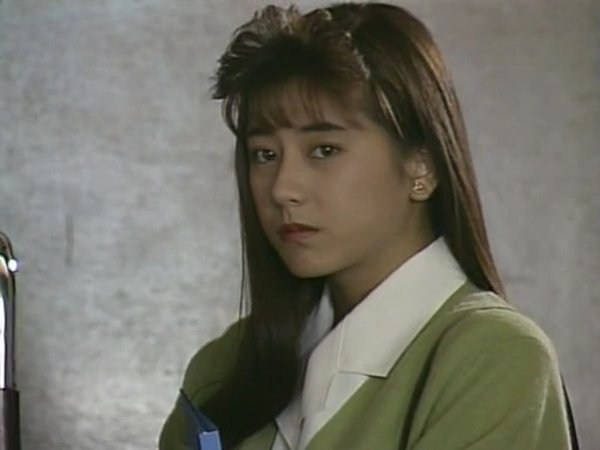

东京爱情故事
《东京爱情故事》（东京ラブストーリー），是由日本富士电视台于1991年1月7日推出的一部爱情电视剧。由永山耕三、本间欧彦联合执导，铃木保奈美、织田裕二等人主演。
该剧根据柴门文的同名漫画改编。描绘了大都会青年男女的写实爱情故事。
内容简介
故事讲述由完治抱着不安而由爱媛到东京，在机场遇见了带着令人回复冲动的笑颜来迎接他的莉香。在二人工作同时，莉香亦开始爱上了完治，但完治心中所爱的是由高中时代一直暗恋着的里美，但里美所爱的却又是三上。造成一个四角关系，就算完治心仍是向着里美，但莉香却无减对完治的感情。终于把完治的心敲开了，正当完治与莉香二人生活过得甜蜜同时，三上及里美之间竟又插入三上的同学尚子。尚子虽然有未婚夫，但对三上却又欲断难断。里美知道，与三上最终只有分离……伤心欲绝之时，在身边慰勉的人只有完治，里美此时才醒觉自己是原来是爱完治的……
主要人物
-
赤名莉香
-
扮演者铃木保奈美，永尾完治的同事。原作中的设定是在非洲长大，电视剧中提示为美国。随父归国后，在东京的一家公司工作。个性敢爱敢恨，自信自我，阳光可爱的背后。也会因过度忧虑而陷入负面状态。做事从来不拘泥于常规。西方文化熏陶下的个性，与永尾完治内敛保守懦弱的性格，形成了鲜明的对比。
爱上一个人，就会完全地奉献，但也要求对方做到，这间接成了永尾离开她的原因。
-
永口完治
-
扮演者织田裕二。出身乡下，向往住在东京。新任HeartSports东京本社推销部职员。为人纯真质朴保守正直。一直暗恋高中同学关口但无勇气告白。对赤名无法真正理解与接受，但出于感激和责任感以及对关口的绝望，一度接受赤名并同其进入半同居状态。后终难以适应赤名前卫的生活、价值观念，退守到少年时代的梦中情人身边。典型的传统中庸式人物。
-
关口里美
-
扮演者有森也实，东京某所幼儿园的教师，她与永尾完治、三上健一都是很要好的朋友。她曾经受宠于这两个男孩之间，在发现三上与长崎尚子的亲密关系后，她拒绝了三上，转向了完治。由于经营情人旅馆的家庭背景，性格逆反式地洁癖、自卑消极被动，有很强烈的母性。典型旧式“家庭型”女性。
-
三上建一
-
扮演者江口洋介，永尾家乡时代一直同在一起的挚友。在东京学医。为人放任不羁，喜欢沾花惹草，对家庭、学业都有背叛意识。同样喜欢过关口，但出于对永尾和关口本人的顾虑，不曾吐露真心。竭力争取到关口以后，也没能摆脱叛逆的本性。最后在长崎的破釜沉舟里看到自己知己的影子，遂改专一而终。其实是一个比起浪漫更看重彼此之间理解的真正汉子。
各集
| 次回 | 标题 |
| 第1回 | 相遇与重逢 |
| 第2回 | 爱的真谛 |
| 第3回 | 两人的开端 |
| 第4回 | 成为你的羽翼 |
| 第5回 | 永志不忘 |
| 第6回 | 以红线相系 |
| 第7回 | 爱无法等待 |
| 第8回 | 相信这段恋情 |
| 第9回 | 不要走 |
| 第10回 | 约定 |
| 最终回 | 再见 |
剧照



